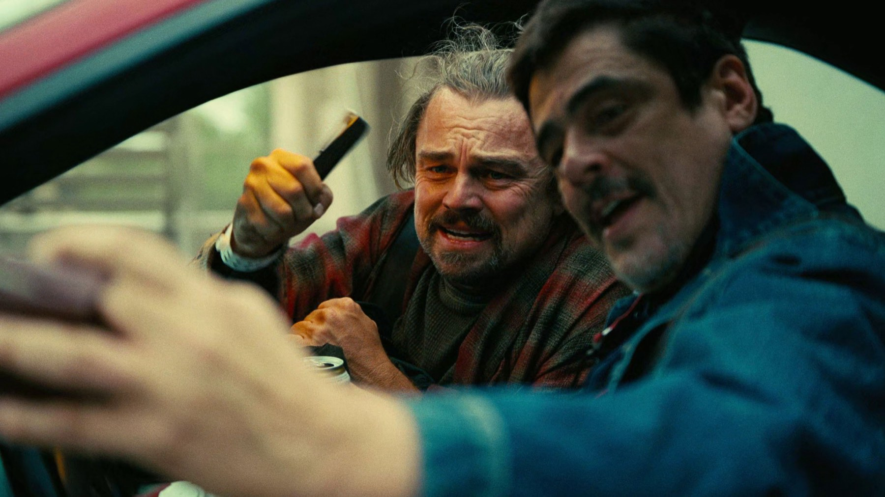

Oscar 2026: tutti i vincitori, i record e le sorprese
Paul Thomas Anderson fa il pieno, Sinners entra nella storia con 16 candidature, Michael B. Jordan vince per un doppio ruolo: la notte del 15 marzo, categoria per categoria
Per una volta la serata degli Oscar ha avuto un vincitore chiaro e una storia da raccontare per ogni categoria. Il 15 marzo 2026, al Dolby Theatre di Los Angeles, con Conan O'Brien alla conduzione per il secondo anno di fila, l'Academy ha incoronato One Battle After Another di Paul Thomas Anderson: sei statuette, comprese le due più pesanti, miglior film e miglior regia. Accanto a lui, però, la notte ha lasciato spazio a un record storico, a un doppio ruolo premiato e a un paio di esclusioni che hanno fatto discutere.
Chi ha vinto il miglior film agli Oscar 2026?
One Battle After Another, uscito in Italia come Una battaglia dopo l'altra, è il grande trionfatore. Anderson, che per anni era stato il grande escluso dei premi principali nonostante una filmografia amatissima dalla critica, ha portato a casa la regia e la sceneggiatura non originale. Sean Penn ha vinto come miglior attore non protagonista, ma non era presente in sala a ritirare il premio. Completano il bottino il montaggio di Andy Jurgensen e un riconoscimento che entrava nel palmarès per la prima volta: il casting, assegnato a Cassandra Kulukundis.
Sei premi su sei categorie molto diverse tra loro raccontano un film amato in modo trasversale dai votanti: dalla scrittura alla costruzione del cast, fino al ritmo del montaggio. È il riconoscimento di un lavoro d'insieme, più che di un singolo exploit.

I premi per gli attori: Michael B. Jordan e Jessie Buckley
La statuetta per il miglior attore è andata a Michael B. Jordan, protagonista di Sinners nel doppio ruolo dei gemelli tornati nel Mississippi del 1932. Jordan ha superato due concorrenti di peso come Leonardo DiCaprio e Timothée Chalamet, che molti davano per favorito con Marty Supreme. È appena il secondo attore nella storia, dopo Lee Marvin nel 1966, a vincere l'Oscar per un doppio ruolo.
Tra le attrici ha vinto Jessie Buckley per Hamnet, dove interpreta la moglie di William Shakespeare. Il premio come non protagonista è andato ad Amy Madigan per la zia Gladys di Weapons, l'horror di Zach Cregger: una vittoria arrivata quarant'anni dopo la sua candidatura precedente, il distacco più lungo di sempre tra due nomination per un'attrice.
Sinners: il record di candidature e i quattro premi
Il film di Ryan Coogler era arrivato alla serata con 16 candidature, il numero più alto nella storia dell'Academy. Ne ha trasformate in premi quattro: l'attore protagonista, la sceneggiatura originale firmata dallo stesso Coogler, la colonna sonora di Ludwig Göransson e la fotografia di Autumn Durald Arkapaw.
Quest'ultima vittoria è forse la più storica dell'intera edizione: Durald Arkapaw è la prima donna, e la prima persona nera, a vincere l'Oscar per la miglior fotografia. Un primato atteso da decenni in una delle categorie tecniche più chiuse di Hollywood.
Sedici candidature, quattro statuette e un primato storico per la fotografia.
Frankenstein, KPop Demon Hunters e gli altri premi
Il Frankenstein di Guillermo del Toro ha conquistato tre categorie artigianali: scenografia, costumi di Kate Hawley e trucco e acconciatura. KPop Demon Hunters ha fatto doppietta, vincendo come miglior film d'animazione e come miglior canzone con Golden. F1 si è preso il premio per il suono, mentre gli effetti visivi sono andati ad Avatar: Fire and Ash, terzo capitolo della saga di James Cameron.
Il premio per il miglior film internazionale è andato alla Norvegia con Sentimental Value, mentre il miglior documentario è Mr Nobody Against Putin. Curiosità per gli appassionati di statistiche: nella categoria dei cortometraggi live action c'è stato un ex aequo, il primo agli Oscar dall'85ª edizione.

Le sorprese e i grandi esclusi
La sconfitta più rumorosa è quella di Marty Supreme, il film sul giocatore di ping pong interpretato da Timothée Chalamet: la corsa per il miglior attore sembrava apertissima, ma il film è tornato a casa senza premi. Anche Sinners, nonostante il record, ha visto sfumare le categorie principali, a conferma che un numero enorme di candidature non garantisce la vittoria finale.
In compenso, l'edizione 2026 ha premiato film molto diversi tra loro: un'opera d'autore politica e ironica, un horror musicale sudista, un gotico d'autore, un film d'animazione nato in streaming. Una varietà che restituisce bene un anno di cinema ricco e imprevedibile.
L'elenco dei vincitori principali
Miglior film: One Battle After Another. Regia: Paul Thomas Anderson (One Battle After Another). Attore protagonista: Michael B. Jordan (Sinners). Attrice protagonista: Jessie Buckley (Hamnet). Attore non protagonista: Sean Penn (One Battle After Another). Attrice non protagonista: Amy Madigan (Weapons).
Sceneggiatura originale: Ryan Coogler (Sinners). Sceneggiatura non originale: Paul Thomas Anderson (One Battle After Another). Film internazionale: Sentimental Value (Norvegia). Film d'animazione: KPop Demon Hunters. Documentario: Mr Nobody Against Putin.
Fotografia: Autumn Durald Arkapaw (Sinners). Montaggio: Andy Jurgensen (One Battle After Another). Colonna sonora: Ludwig Göransson (Sinners). Canzone: Golden (KPop Demon Hunters). Scenografia, costumi (Kate Hawley) e trucco: Frankenstein. Suono: F1. Effetti visivi: Avatar: Fire and Ash. Casting, assegnato per la prima volta: Cassandra Kulukundis (One Battle After Another).
Messi in fila, i numeri raccontano bene la serata: sei premi a One Battle After Another, quattro a Sinners, tre a Frankenstein, due a KPop Demon Hunters. Un voto concentrato su pochi titoli forti, con tutti gli altri premi distribuiti uno per film.
Dove vedere i film premiati
Molti dei titoli premiati sono arrivati in streaming nei mesi successivi alla cerimonia, e la disponibilità sulle piattaforme cambia spesso. Prima di una maratona degli Oscar conviene controllare dove si trovano al momento: nelle nostre recensioni, quando un film è disponibile in streaming, indichiamo la piattaforma.
Un'edizione con un vincitore netto e meritato, One Battle After Another, ma anche con diversi primati destinati a restare: il record di candidature di Sinners, il doppio ruolo di Michael B. Jordan, la prima direttrice della fotografia premiata. Una delle notti degli Oscar più ricche degli ultimi anni.
Domande frequenti
Chi ha vinto l'Oscar 2026 come miglior film?
One Battle After Another (in Italia Una battaglia dopo l'altra) di Paul Thomas Anderson, che ha vinto 6 statuette in tutto.
Chi ha vinto l'Oscar 2026 come miglior attore e miglior attrice?
Michael B. Jordan per il doppio ruolo dei gemelli in Sinners e Jessie Buckley per Hamnet.
Quante candidature aveva Sinners agli Oscar 2026?
Sedici, il numero più alto nella storia degli Oscar. Ha vinto 4 premi: attore, sceneggiatura originale, fotografia e colonna sonora.